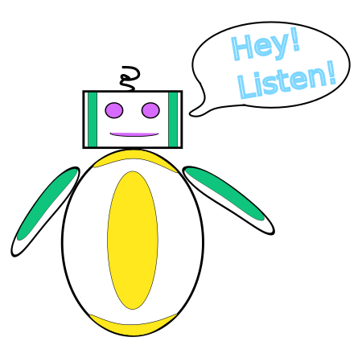

QSPy: Quantitative Systems Pharmacology in Python
QSPy (pronounced "Cue Ess Pie") is a Python framework for building modular, rule-based models that describe drug behavior and pharmacological interactions within biological systems. Leveraging the power of PySB, it streamlines the development, simulation, and analysis of quantitative systems pharmacology (QSP) models through a reproducible and programmatic approach.
Getting Started How-To Guides Build Model Share Model
API Documentation Need Help? About QSPy Contributing

Navig-8 says:
Thanks for exploring QSPy! This project is still in early development, so your feedback and support are especially important. You can help us continue to make QSPy better!
Leave Feedback Other Ways to Support the Project